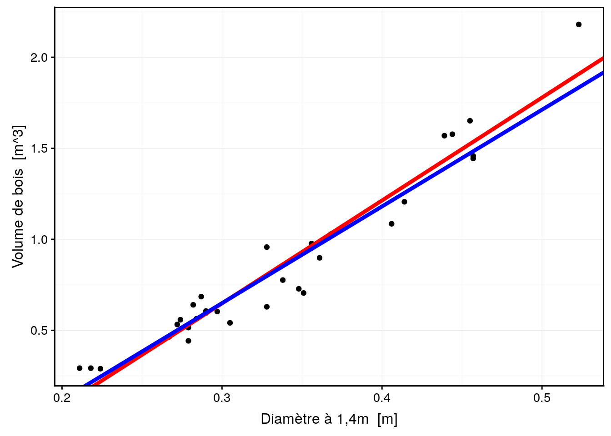
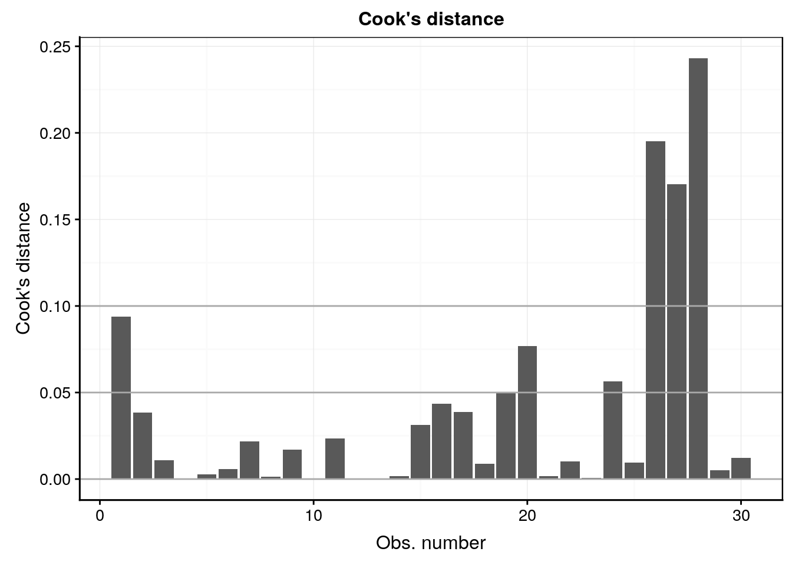
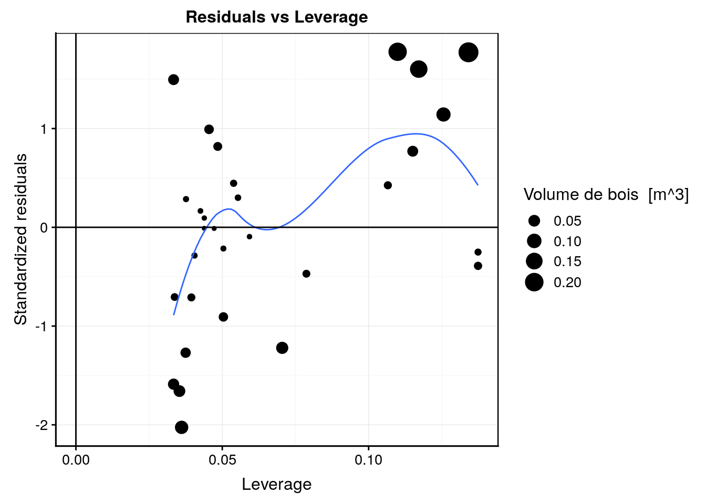
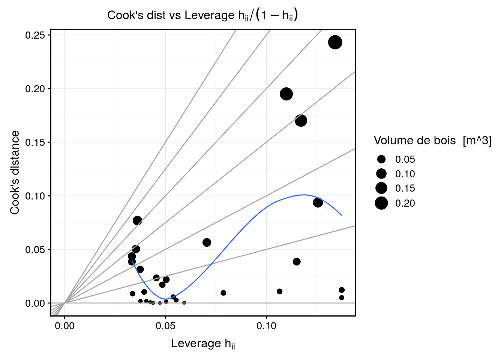

2.1 Outils de diagnostic (suite)
La régression linéaire est une matière complexe et de nombreux outils existent pour vous aider à déterminer si le modèle que vous ajustez tient la route ou non. Il est très important de le vérifier avant d’utiliser un modèle. Ajuster un modèle quelconque dans des données est à la portée de tout le monde, mais choisir un modèle pertinent et pouvoir expliquer pourquoi est nettement plus difficile !
2.1.1 Résumé avec summary()(suite)
Reprenons la sortie renvoyée par summary() appliqué à un objet lm.
trees <- read("trees", package = "datasets", lang = "fr")
lm. <- lm(data = trees, volume ~ diameter)
summary(lm.)#
# Call:
# lm(formula = volume ~ diameter, data = trees)
#
# Residuals:
# Min 1Q Median 3Q Max
# -0.231211 -0.087021 0.003533 0.100594 0.271725
#
# Coefficients:
# Estimate Std. Error t value Pr(>|t|)
# (Intercept) -1.04748 0.09553 -10.96 7.85e-12 ***
# diameter 5.65154 0.27649 20.44 < 2e-16 ***
# ---
# Signif. codes: 0 '***' 0.001 '**' 0.01 '*' 0.05 '.' 0.1 ' ' 1
#
# Residual standard error: 0.1206 on 29 degrees of freedom
# Multiple R-squared: 0.9351, Adjusted R-squared: 0.9329
# F-statistic: 417.8 on 1 and 29 DF, p-value: < 2.2e-16Nous n’avons pas encore étudié la signification des trois dernières lignes de ce résumé. Voici de quoi il s’agit.
- Residual standard error :
Il s’agit de l’écart-type résiduel, considérant que les degrés de liberté du modèle est le nombre d’observations \(n\) (ici 31) soustrait du nombre de paramètres à estimer (ici 2, la pente et l’ordonnée à l’origine de la droite). C’est donc une mesure globale de l’importance (c’est-à-dire de l’étendue) des résidus de manière générale.
\[\sqrt{\frac{\sum(y_i - ŷ_i)^2}{n-2}}\]
- Multiple R-squared :
Il s’agit de la valeur du coefficient de détermination du modèle noté R^2 de manière générale ou r2 dans le cas d’une régression linéaire simple. Il exprime la fraction de variance exprimée par le modèle. Autrement dit, le R2 quantifie la capacité du modèle à prédire la valeur de \(y\) connaissant la valeur \(x\) pour le même individu. C’est dons une indication du pouvoir prédictif de notre modèle autant que de sa qualité d’ajustement (goodness-of-fit en anglais).
Souvenons-nous que la variance totale respecte la propiété d’additivité. La variance est composée au numérateur d’une somme de carrés, et au dénominateur de degrés de liberté. La somme des carrés totaux (de la variance) peut elle-même être décomposée en une fraction expliquée par notre modèle, et la fraction qui ne l’est pas (les résidus) :
\[SC(total) = SC(rég) + SC(résidus)\]
avec :
\[SC(total) = \sum_{i=0}^n(y_i - \bar y_i)^2\]
\[SC(rég) = \sum_{i=0}^n(ŷ_i - \bar y_i)^2\]
\[SC(résidus) = \sum_{i=0}^n(y_i - ŷ_i)^2\]
A partir de la décomposition de ces sommes de carrés, le coefficient R2 (ou r2) se définit comme :
\[R^2 = \frac{SC(rég)}{SC(total)} = 1 - \frac{SC(résidus)}{SC(total)}\]
La valeur du R2 est comprise entre 0 (lorsque le modèle est très mauvais et n’explique rien) et 1 (lorsque le modèle est parfait et “capture” toute la variance des données ; dans ce cas, tous les résidus valent zéro). Donc, plus le coefficient R2 se rapproche de un, plus le modèle explique bien les données et aura un bon pouvoir de prédiction.
Dans R, le R2 multiple se réfère simplement au R2 (ou au r2 pour les régressions linéaires simples) calculé de cette façon. L’adjectif multiple indique simplement que le calcul est valable pour une régression multiple telle que nous verrons plus loin.
Par contre, le terme au dénominateur considère en fait la somme des carrés totale par rapport à un modèle de référence lorsque la variable dépendante \(y\) ne dépend pas de la ou des variables indépendantes \(x_i\). Les équations indiquées plus haut sont valables lorsque l’ordonnée à l’origine n’est pas figée (\(y = a \ x + b\)). Dans ce cas, la valeur de référence pour \(y\) est bien sa moyenne, \(\bar y\).
D’un autre côté, si l’ordonnée à l’origine est fixée à zéro dans le modèle simplifié \(y = a \ x\) (avec \(b = 0\) obtenu en indiquant la formule y ~ x + 0 ou y ~ x - 1), alors le zéro sur l’axe \(y\) est considéré comme une valeur appartenant d’office au modèle et devient valeur de référence. Ainsi, dans les équations ci-dessus il faut remplacer \(\bar y\) par 0 partout. Le R2 est alors calculé différemment, et sa valeur peut brusquement augmenter si le nuage de points est très éloigné du zéro sur l’axe y. Ne comparez donc jamais les R2 obtenus avec et sans forçage à zéro de l’ordonnée à l’origine !
- Adjusted R-squared :
La valeur du coefficient R2 ajustée, noté \(\bar{R^2}\) n’est pas utile dans le cadre de la régression linéaire simple, mais est indispensable avec la régression multiple. En effet, à chaque fois que vous rendez votre modèle plus complexe en ajoutant une ou plusieurs variables indépendantes, le modèle s’ajustera de mieux en mieux dans les données, même par pur hasard. C’est un phénomène que l’on appelle l’inflation du R2. A la limite, si nous ajoutons une nouvelle variable fortement corrélée avec les précédentes4, l’apport en terme d’information nouvelle sera négligeable, mais le R2 augmentera malgré tout un tout petit peu. Alors dans quel cas l’ajout d’une nouvelle variable est-il pertinent ou non ? Le R2 ajusté apporte l’information désirée ici. Sa valeur n’augmentera pour l’ajout d’un nouveau prédicteur que si l’ajustement est meilleur que ce que l’on obtiendrait par le pur hasard. Le R2 ajusté se calcule comme suit (il n’est pas nécessaire de retenir cette formule, mais juste de constater que l’ajustement fait intervenir p, le nombre de paramètres du modèle et n, la taille de l’échantillon) :
\[ \bar{R^2} = 1 - (1 - R^2) \frac{n - 1}{n - p - 1} \]
- F-statistic :
Tout comme pour l’ANOVA, le test de la significativité de la régression car \(MS(rég)/MS(résidus)\) suit une distribution F à respectivement 1 et \(n-2\) degré de liberté, avec \(MS\) les carrés moyens, c’est-à-dire les sommes des carrés \(SC\) divisés par leurs degrés de liberté respectifs.
- p-value :
Il s’agit de la valeur p associé à la statistique de F, donc à l’ANOVA associée à la régression linéaire. Pour cette ANOVA particulière, l’hypothèse nulle est que la droite n’apporte pas plus d’explication des valeurs de y à partir des valeurs de x que la valeur moyenne de y (ou zéro, dans le cas paerticulier d’un modèle dont l’ordonnée à l’origine est forcé à zéro). L’hypothèse alternative est donc que le modèle est significatif au seuil \(\alpha\) considéré. Donc, notre objectif est de rejetter H0 pour cet test ANOVA pour que le modèle ait un sens (valeur p plus petite quez le seuil \(\alpha\) choisi).
Le tableau complet de l’ANOVA associée au modèle peut aussi être obtenu à l’aide de la fonction anova() :
anova(lm.)# Analysis of Variance Table
#
# Response: volume
# Df Sum Sq Mean Sq F value Pr(>F)
# diameter 1 6.0762 6.0762 417.8 < 2.2e-16 ***
# Residuals 29 0.4218 0.0145
# ---
# Signif. codes: 0 '***' 0.001 '**' 0.01 '*' 0.05 '.' 0.1 ' ' 1On y retrouve les mêmes informations, fortement résumées en une ligne à la fin de la sortie de summary(), mais ici sous une forme plus classique de tableau de l’analyse de la variance.
2.1.2 Comparaison de régressions
Vous pouvez à présent comparer ces résultats avec un tableau et les six graphiques d’analyse des résidus sans la valeur supérieure à 0.5m de diamètre. Attention, On ne peut supprimer une valeur sans raison valable. La suppression de points aberrants doit en principe être faite avant de débuter l’analyse. La raison de la suppression de ce point est liée au fait qu’il soit seul et unique point supérieur à 0.5m de diamètre. Nous le faisons ici à titre de comparaison.
trees_red <- filter(trees, diameter < 0.5)
lm1 <- lm(data = trees_red, volume ~ diameter)
chart(trees, volume ~ diameter) +
geom_point() +
geom_abline(
aes(intercept = lm.$coefficients[1], slope = lm.$coefficients[2]),
color = "red", size = 1.5) +
labs( color = "Modèle") +
scale_color_viridis_c(direction = -1) +
geom_abline(
aes(intercept = lm1$coefficients[1], slope = lm1$coefficients[2]),
color = "blue", size = 1.5)
La droite en bleu correspond à la régression sans utiliser l’arbre de diamètre supérieur à 0,5m. Tentez d’analyser le tableau de notre régression en bleu (astuce : comparez avec ce que la régeression précédente donnait).
summary(lm1)#
# Call:
# lm(formula = volume ~ diameter, data = trees_red)
#
# Residuals:
# Min 1Q Median 3Q Max
# -0.215129 -0.068502 -0.001149 0.070522 0.181398
#
# Coefficients:
# Estimate Std. Error t value Pr(>|t|)
# (Intercept) -0.94445 0.09309 -10.15 6.98e-11 ***
# diameter 5.31219 0.27540 19.29 < 2e-16 ***
# ---
# Signif. codes: 0 '***' 0.001 '**' 0.01 '*' 0.05 '.' 0.1 ' ' 1
#
# Residual standard error: 0.1082 on 28 degrees of freedom
# Multiple R-squared: 0.93, Adjusted R-squared: 0.9275
# F-statistic: 372.1 on 1 and 28 DF, p-value: < 2.2e-16Tentez d’analyser également les graphiques d’analyse des résidus ci-dessous.
#plot(lm1, which = 1)
lm1 %>.%
chart(broom::augment(.), .resid ~ .fitted) +
geom_point() +
geom_hline(yintercept = 0) +
geom_smooth(se = FALSE, method = "loess", formula = y ~ x) +
labs(x = "Fitted values", y = "Residuals") +
ggtitle("Residuals vs Fitted") 
#plot(lm1, which = 2)
lm1 %>.%
chart(broom::augment(.), aes(sample = .std.resid)) +
geom_qq() +
geom_qq_line(colour = "darkgray") +
labs(x = "Theoretical quantiles", y = "Standardized residuals") +
ggtitle("Normal Q-Q") 
#plot(lm1, which = 3)
lm1 %>.%
chart(broom::augment(.), sqrt(abs(.std.resid)) ~ .fitted) +
geom_point() +
geom_smooth(se = FALSE, method = "loess", formula = y ~ x) +
labs(x = "Fitted values",
y = expression(bold(sqrt(abs("Standardized residuals"))))) +
ggtitle("Scale-Location") 
#plot(lm1, which = 4)
lm1 %>.%
chart(broom::augment(.), .cooksd ~ seq_along(.cooksd)) +
geom_bar(stat = "identity") +
geom_hline(yintercept = seq(0, 0.1, by = 0.05), colour = "darkgray") +
labs(x = "Obs. number", y = "Cook's distance") +
ggtitle("Cook's distance") 
#plot(lm1, which = 5)
lm1 %>.%
chart(broom::augment(.), .std.resid ~ .hat %size=% .cooksd) +
geom_point() +
geom_smooth(se = FALSE, size = 0.5, method = "loess", formula = y ~ x) +
geom_vline(xintercept = 0) +
geom_hline(yintercept = 0) +
labs(x = "Leverage", y = "Standardized residuals") +
ggtitle("Residuals vs Leverage")
#plot(lm1, which = 6)
lm1 %>.%
chart(broom::augment(.), .cooksd ~ .hat %size=% .cooksd) +
geom_point() +
geom_vline(xintercept = 0, colour = NA) +
geom_abline(slope = seq(0, 3, by = 0.5), colour = "darkgray") +
geom_smooth(se = FALSE, size = 0.5, method = "loess", formula = y ~ x) +
labs(x = expression("Leverage h"[ii]), y = "Cook's distance") +
ggtitle(expression("Cook's dist vs Leverage h"[ii] / (1 - h[ii])))
Au travers de cet exemple, nous constatons que la comparaison de modèles, dans le but de choisir le meilleur est un travail utile. Cela apparaitra d’autant plus utile que la situation va passablement se complexifier (dans le bon sens) avec l’introduction de la régression multiple et polynomiale ci-dessous. Heureusement, nous terminerons ce module avec la découverte d’une métrique qui va nous permettre d’effectuer le choix du meilleur modèle de manière fiable : le critère d’Akaike.
A vous de jouer !
Réalisez une nouvelle assignation individuelle :
Vous avez à votre disposition une assignation GitHub Classroom :
La corrélation entre les prédicteurs dans un modèle linéaire multiple est un gros problème et doit être évité le plus possible. Cela s’appelle la colinéarité ou encore multicollinéairité. Ainsi, il est toujours préférable de choisir un ensemble de variables indépendantes peu corrélées entre elles dans un même modèle, mais ce n’est pas toujours possible.↩